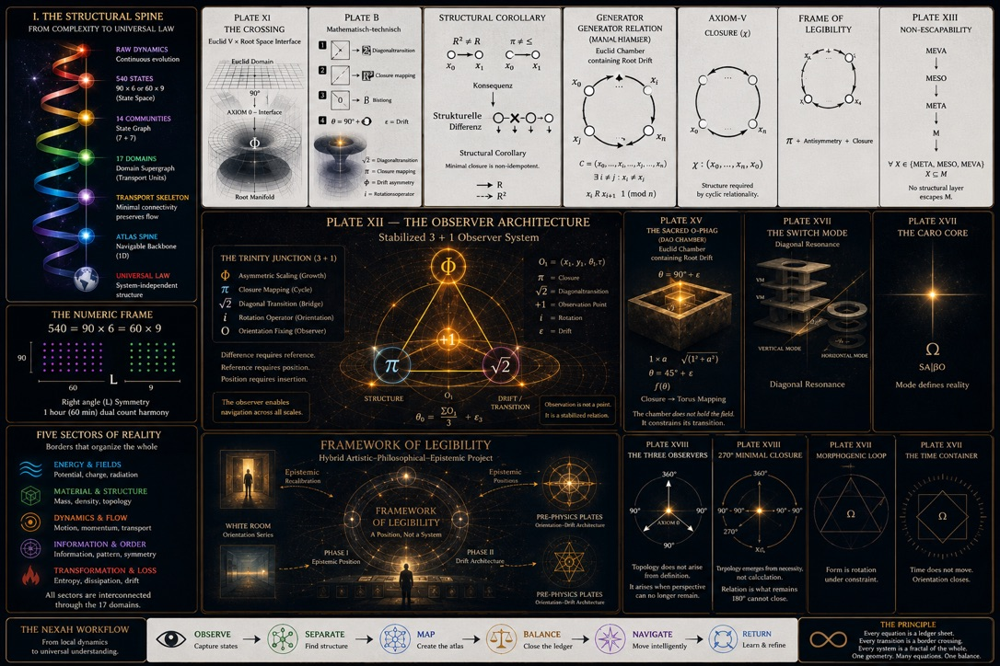

Suchkarte, keine Gleichung.
Die historischen Visuals liefern Begriffe und Fragen. Sie sind ausdrücklich keine Resultatautorität.
A0 beginnt hier nicht mit der Behauptung eines Universalsystems, sondern mit einer prüfbaren Frage: Welche Träger, Ansichten, Operatoren und Rückwege werden tatsächlich deklariert? Die historischen Tafeln geben die Suchkarte; die gebundenen Tests setzen die Grenzen.
Die Suchkarten vom 2. Juli bleiben als historische Quellen erhalten. Die vorhandene Ergebnislesung wurde bis 15. Oktober abgeglichen. Heute kommen Forschungsbuch und Workbench-Einstieg hinzu. Navigation, lokale Bedienung und gemeinsamer Maschinenzustand sind drei verschiedene Anschlussgrade.
| Bestand / Rolle | Heutiger Einstieg | Tatsächlicher Anschluss |
|---|---|---|
| Five Stacks / Nine Groups / Universal Structures | Historische Karten · 3+1-Gesamtsicht | Quellen und Lesepfade; keine universelle Zustandsmaschine. |
| Universal Ledger | Bilanzrechner A+T−L | Lokale Arithmetik, kein physikalisches Ledger und kein State-Bus. |
| Pascal / PENT-01…07 / 3D-Lift | Core-Explorer · Bench-Werkzeugfach | Hashgebundene Quelle und lokale Bedienung. PENT-04 ist der eigene 3D-Konstruktionsschritt, nicht jeder hier genannte Lift. |
| PENT-07 · 5/6-Hub / D30 | Typisierte Kopplung · Explorer-Tabs 5/6 coupling / D30 joint | Hub-Konstruktion und Phasen-/Registeransicht im Explorer. Die Workbench kann jetzt sechs UI-Felder mit bestätigtem Readback steuern. Kein C5=C6-Schluss und keine vollständige 106-Knoten-Adresse. |
| NCS / Q106 / Ihara | Bestehende Explorer und Audits · Ihara-Instrument | Lokale Views und dokumentierte Ergebnisse; Intertwiner, Labelmap und Janus-Auswahl bleiben offen. |
| Root7 / offenes Buch | Buchkonstruktion | Root7 liest den Q4-Takt. Seine deklarierte Buchgeometrie ist nicht als PENT-04-Lift identifiziert. |
| Core-Dynamik / Lorenz / JANUS | Forschungsbuch · UTG-Einstieg | Quellen, Projektionen und Kontrollrecords werden gemeinsam lesbar; alte Runs bleiben getrennt. |
| Workbench / Machine | OCB · PENT-Anschluss · AXIS08 · Tourenkarte | PENT→Master→UI-Return ist jetzt als opt-in Adapter gebaut: sechs Felder, bestätigter Renderer-Control-Readback, Export/Import und HOLD. Der gefrorene Original-Explorer bleibt unverändert; Gesamtmaschine, Pixelabnahme und Forschungsvalidierung folgen daraus nicht. |
Eine echte PENT-Kopplung braucht Modus, Träger-/Registeradresse, Operator, Verlust und Return-Receipt über einen eigenen Vertrag. Der bestehende OCB-Read-only-Adapter liest den trinomialen Pascal-Schatten, nicht diesen Explorer. Der hashgebundene Snapshot bleibt unverändert.
Die historischen Visuals liefern Begriffe und Fragen. Sie sind ausdrücklich keine Resultatautorität.
28→112→106, PENT-01…07, D₅, Metrik und negative Kontrollen sind der formale Kern.
Die Rechner für sechs Operatoren, 16 Adressen, 111-Grid und Viertelphase erklären lokale Funktionen; sie sind nicht eine gemeinsame Superfunktion.
D₃₀, NCS/Q106 und spätere Views zeigen Übersetzungen und Lücken. Sie erweitern keine PENT-Identität.
Die Tafeln vom 2. Juli 2026 beschreiben dieselbe Materialsammlung einmal als vertikale Verdichtung und einmal als horizontale Themenkarte. Ohne explizite Maps sind diese Ansichten nicht identisch und kein Beweis einer universellen Geometrie.
540 = 60×9 = 90×6Eine endliche Menge von 540 Positionen kann in verschiedene Rechteckansichten zerlegt werden. Erst eine erklärte Zustandsmenge macht daraus 540 States.
Die Faktorisierung allein liefert weder Mikrozustände noch Dynamik, Nachbarschaft oder Speicher.
Ein Verdichtungsweg von Möglichkeiten zu einer navigierbaren Route. Jeder Pfeil benötigt eine erklärte Abbildung oder Auswahlregel.
Eine Themenkarte für Darstellungen und Werkzeuge. Die Reihenfolge organisiert das Buch; sie ist nicht automatisch eine Kausalkette.
Belastbar ist die Faktorisierung. „State space“ wird sie erst mit einer definierten Menge und Zustandssemantik.
68 = 2×34
68 + 22 = 90
3×60° = 2×90° = 180°
3×180° = 540°
2×540° = 1080° = 18×60° = 12×90°Die erweiterte Lesart ist eine deklarierte Faltung: Zwei magische Liniensummen liefern den arithmetischen Wert 68; eine ausgewählte Zykluszerlegung liefert 22. Erst eine erklärte Map liest ihre Summe als 90°-Ansicht. Drei 180°-Faltungszellen ergeben die beiden Rechteckansichten von 540. Ein zusätzlich deklarierter binärer Seitenzustand σ macht die offene +1-Lücke sichtbar: 540° setzt σ=-1, erst 1080° bringt σ=+1 zurück.
Return-Grenze: Bei 1080° kehren Achse, orientierter Vektor und der deklarierte Flip-Zustand zurück. Der vollständige Zustand bleibt mit g=6 und fortgeschriebener Geschichte verschieden.
Belastbar ist eine Zweiteilung in zwei Siebenermengen. Komplementarität, Balance oder Communities brauchen zusätzliche Relationen.
Dies ist die kleinste positive Zahl mit zwei Darstellungen als Summe zweier positiver Kuben. Eine Regulator- oder Sprungrolle folgt daraus nicht.
Das Instrument prüft nur die deklarierte Rechnung A + T − L. Ein physikalisches Erhaltungsgesetz entsteht erst mit Einheit, Vorzeichenkonvention, Messprotokoll und Closure-Regel.
9 + 0 − 9 = 0arithmetically closed · semantics still declared, not inferred



The 2 July date is verified from all four supplied files. No source carrying “U-field” as the stable title or identity of this plate series has been located. Existing Core uses of u_field are later control/field variables and are not silently identified with these images.
Die vier Stufen sind eine Lesearchitektur, keine zusätzliche Algebra. Jede Stufe benennt eine andere Verantwortung im selben Testweg.
Fünf Pascal-Flächen, Zeilen 0…6, Gewichte, Kanten und Nahtregeln.
Seitenketten verkleben; inkonsistente Labels und direkte C5→C6-Identifikation zurückweisen.
Metrisches Pentagon, Bipyramide, Root-System, Phasenabdeckung und Quaternionenansicht.
Wachstum, Abschluss, Spiegel, Drehung, Hub oder Return ausdrücklich deklarieren.
Die Knotenzahlen markieren verschiedene Zustände und Quotienten. Sie dürfen nicht als austauschbare Symbolzahlen gelesen werden.
7 Pascal rowsB_open=7D5 quotientV/E/F · χ=2D5 × C2H2 ⊕ A1Rotation and reflection preserve weights, quotient recurrence and the complete metric distance matrix in the regular-pentagon realization.
4×20=80 counts four non-identity turns over the weight-20 orbit. Including identity/return gives 5×20=100.
13×8=104; therefore 106=13×8+2. No role is invented for the remainder.
Die Verbindung wird erst belastbar, wenn ihre Art benannt ist: Phase cover, selected isomorphism, common hub or edge gluing.
| Relation | Result | Meaning |
|---|---|---|
C5 → C6 direct | FAIL | Different cardinality; zero graph homomorphisms from odd C5 to bipartite C6. |
C5, C6 ↪ Z30 | PASS WITH TYPE BOUNDARY | Common 12-degree phase raster; not an adjacent-edge embedding. |
C6A ↔ C6B | UNDEFINED SELECTION | Twelve dihedral isomorphisms; offset and orientation must be chosen. |
C5+C6+C6 | PASS AS HUB COUPLING | 17 shell nodes; common hub yields 18 nodes, 34 edges and one component. |
| 12-mode display | NOT INFERRED | Twelve axes are drawn by the program; they are not recovered from the trajectories. |
5+6=11 · 6+6=12 · 5+6+6=17 are exact shell counts — not coupling operators.
110, 111, 112, 1/112 and v55 remain provenance/search markers. A modular shadow requires a declared modulus N and a map such as x ↦ −x mod N.
The trinomial Pascal carrier separates continuous spatial orientation from discrete carrier symmetry.
All six coordinate permutations preserve the integer carrier, multinomial weights and recurrence edges.
Identity and the 120°/240° cyclic axis permutations are proper rotations.
The Euclidean view rotates, but integer lattice membership fails. Quaternion rotation is not generally a carrier automorphism.
orientation/view operator ≠ discrete Pascal-carrier automorphism ≠ generator of Pascal coefficients
Die historische v55-Tafel wird als Proto-Spezifikation gelesen. Das Instrument trennt Rechenoperator, Richtung, Spin und Elevator-Level, bevor irgendeine globale Bedeutung vergeben wird.

2 × 3 = 6Multiplication and division form a conditional mirror pair when the divisor is non-zero.
Die 16 Zustände sind ein kartesisches Produkt von Labels. Eine Pyramidenzeichnung kann diese Zustände darstellen; sie beweist nicht, dass sechzehn physische Pyramiden im Körper liegen.
111×111=12,321 is exact. The historical drift label ±1/112 is a declared normalized step, not a consequence of the grid cardinality. A level change requires an explicit map; it does not preserve identity automatically.
Die zweite Tafel enthält einen brauchbaren Übersetzer zwischen Phase, Nullstelle und Zustandswechsel — aber ihre mathematische Closure benötigt eine Korrektur.

q₁(x)=q₀(x+π/2)Zeros at nπ; the next state cos(x) has extrema there.
k(x)=-f(x)sin x and cos x are orthogonal over a full period. -sin x lies on the same functional axis as sin x; therefore the displayed scalar span has dimension two, not three.
If amplitudes are attached to declared independent basis vectors e₁,e₂,e₃, the carrier axes may be orthogonal even when two scalar signals are dependent. Carrier orthogonality and function orthogonality must not be merged.
sin→cos→−sin→−cos→sin. Three quarter-turns reach −cos, not the initial state. A 270° minimal closure is therefore false for this equal-step cycle.
Zeros of one quarter-phase state coincide with extrema of the next. The crossing is an event marker; state activation still requires a declared transition rule and direction.
A star, cross or zero marker does not itself cause a transition. The zero-crossing operator becomes operational only after sampling interval, tolerance, crossing direction, state map and failure behavior are declared.
Dieser Block führt die neuen Engineering-Checks und die gezielte Repository-Archäologie in der bestehenden A0-/PENT-Lesefläche zusammen. Er trennt reproduzierbare Resultate, statische Records, geschlossene Negativbefunde und offene Kandidaten.
16/16 Checks PASS. Der endliche Träger hat 1221=11×111 Zustände und die exakte CRT-Adresse ℤ/1221 ≅ ℤ/11 × ℤ/111. Der offene Rechteckgraph besitzt 1221 Knoten und 2320 Kanten; die zentrale Janus-Spiegelung ist involutiv.
A(n)=(n mod 11, n mod 111)
J(n)=1220−n · J²=id5.460 Records, null Full-Record-Kollisionen. Beide Views allein sind verlustbehaftet; Adresse plus beide Clamp-Seiten rekonstruieren exakt. Der C/D-Swap erhält Adresse und Summe, aber nicht die semantische Seitenrolle.
H=(m,t mod 7,t mod m,CA,CB)
x=CA+CBDer statische Resultatsatz bestätigt im getesteten Bereich: CA allein ist nicht injektiv, (CA,CB) ist injektiv und der A/B-Flip ist eine summenerhaltende Involution. Für ACR‑38 wurde jedoch kein Runner geliefert; ACR‑39 ist der reproduzierbare Nachbar.
| Linie | Status | Ergebnis | Claim ceiling / Konsequenz |
|---|---|---|---|
| HMA‑01 CRT product space | CLOSED / REPRODUCIBLE | ℤ/77 ≅ ℤ/7 × ℤ/11, eindeutige Rekonstruktion und negative Kontrollen unterstützt. | Standardmathematik; keine NEXAH-Validierung, kein historischer Transformationsinvariant. |
| QRT × CRT Herkunft → Wert → Adresse | MATCHED TO A0 | 1729+7911=9640; 1729=(64,15) im 111er Raster und (49,15) in der Breite-112-Ansicht; 1729 mod 1232=497. | 112×110=12320 und 111×111=12321 sind exakt. Das zusätzliche +1 ist noch kein Gate oder Lift. |
| NP Grid 5 × 7 | VISUAL SOURCE OPEN | 35↦(0,0) und 72↦(2,2) sind gewöhnliche Restkoordinaten in ℤ/5 × ℤ/7. | Die konkrete Visualquelle wurde nicht wiedergefunden; Prime-Radien oder physische Resonanz folgen nicht aus der CRT-Tafel. |
| WFR‑01 Wind / Field / Flow | CLOSED NEGATIVE | +11 WIND wurde nicht unabhängig rekonstruiert; 7×11=77 bleibt Arithmetik. | Grid resolution ≠ winding number ≠ frequency ≠ physical regime. |
| WNI‑01 Winding audit | CLOSED CONDITIONAL | Standard-Winding bleibt unter erklärter Kurve, Referenz, Orientierung und Provenienz erhalten; Spiegelung kehrt das Vorzeichen um. | Keine Prime/Grid-Topologie und keine Zuordnung von +11 WIND zu Winding. |
Observatory E06G11 → G111 | OPEN CANDIDATE | Die 11-Familien-Adressgrammatik bleibt sichtbar. | Der kanonische Liftpfad und die Return-Regel wurden nicht wiedergefunden. |
Links und rechts stehen zwei verschiedene endliche Träger. Die Mitte markiert genau die noch fehlende Abbildung — nicht eine bloße Größenänderung oder visuelle Verschachtelung.
1221 statesExakte Adresse als Restpaar (n mod 11, n mod 111). Keine direkte Zellverschachtelung in das Zielraster.
G11 × K → G111Quelle, Zusatzschlüssel, Kollisionen und Return müssen erklärt werden.
12321 states12321 = 10·1221 + 111 ist eine exakte Kardinalitätszerlegung, aber noch keine kanonische Geometrie.
11×111=1221, 111×111=12321, CRT-Adressierung, Janus-Involution und Roundtrip-Prüfkriterien.
1221=12321, direkte Zellidentität, „gleiche 11-Familie = gleicher Carrier“ und ein Lift allein aus dem wiederkehrenden Zahlbild.
Ein kanonischer Schlüssel K, die Bildmenge von L, Rand-/Cap-Behandlung und ein reproduzierbarer Return R∘L=id.
CRT product coordinatesaddress + both sidestyped finite carriergrid ≠ wind ≠ windingcandidate onlycanonical return missingGesucht ist ein deklarierter, kollisionsgeprüfter Lift mit Rückweg: L:G11×K→G111 und R(L(a,k))=(a,k). Die Archäologie legt als minimale, noch zu prüfende Schlüsseltypen K=(scale/register, side/residual, orientation, provenance) nahe. Diese Typen sind eine Designbedingung, keine wiedergefundene historische Formel. Direkte Zellverschachtelung, CRT-Rekonstruktion, Clamp-Paarung und Standard-Winding werden nicht erneut getestet.
Die neuen Tafeln wurden gegen Lab, Core, ORION, NEXAH-CODEX und die historischen Visual-Archive geprüft. Die Matrix trennt exakte Experimentbindung, dokumentarische Visualquelle und offene Herkunft.
EMP‑03 ist CLOSED — CONDITIONAL PASS / DOMAIN MAPPED. Die Gate-Kette ist als FROZEN_BOUNDED_FORMALIZATION dokumentiert: logisch geschlossen, empirisch weiterhin anwendungsabhängig.
Die Alpha-Gate-Frames K/L besitzen konkrete Output-Dateien und Begleitdaten; ein replaybarer Generator wurde nicht gefunden. Satellite G und Thermal M₁ sind historische Konzeptsimulationen, keine validierten Experimente.
Die Poster-Thumbnails konnten keiner exakten Datei plus Generator gebunden werden. Das bleibt UNRESOLVED_NOT_ABSENT. Der Katalog vergibt außerdem Frame M doppelt; vorerst gelten M₁ und M₂.
| Marker / Frame | Quellenstatus | Wissenschaftlicher Status | Konsequenz |
|---|---|---|---|
| EMP‑03 Tangent / Polar | EXACT BINDING | CONDITIONAL PASS | Reale Tangenten wechseln im synthetischen Modell 2→1→0; kein universelles Return-Gesetz. |
| Gate 8 · 12E · 13K/L/N | EXACT / PERCEPTUAL MATCH + LEDGER | FROZEN BOUNDED | Keine Wiederholung und kein Gate 13O; externe empirische Validität bleibt offen. |
| EXP‑JANUS‑15G | EXACT SOURCE + ORION MANIFEST | L0 ONLY | Skalierung und Vierteldrehung kommutieren im Modell; Felddeutung nicht validiert. |
| Generation Corner | EXACT A0 SOURCE | DOCUMENTARY INSTRUMENT | Typed reader and return crosswalk; keine neue Studie und keine universelle Pascal-Identität. |
| FP → RR → OE | EXACT CORE HANDOFF | NON-CANONICAL | Experimententwurf und Ablationsplan, nicht ausgeführtes Lab-Ergebnis. |
| Scarab Map v2.0 | POSTER SOURCE OPEN | CORRECTION REQUIRED | Die Totienten-Gleichheit stimmt; der gedruckte Wert ist falsch: 16/51≈0.31372549, nicht 0.449187…. |
radial / FourierAlpha Gate visualsconcept simulationsaperture visualsrename requirednot a manifestDie Posterübersicht ist jetzt eine filterbare, source-bound HTML-Registry; sie wird weiterhin nicht als historisch existierendes Verzeichnis ausgegeben. Der begleitende Grid Atlas nimmt den CRT-Grundtakt 112×110=10×1232 gegenüber 111×111=10×1232+1 auf und trennt alle Carrier. Pro Frame bleiben Source-Hash, Generator, Parameter, Evidenzklasse und Claim Ceiling sichtbar oder ausdrücklich offen. Die Oberflächen liefern keine fehlende Formel für den 11×111→111×111-Lift.
NN bewahrt Herkunft und vollständige Testbeziehungen. Diese Fläche macht daraus einen lesbaren Book-Joint; die ausführbaren Core-Pakete bleiben Resultatautorität.
Carrier, seams, 106 quotient and 112 preclosure state.
Boundary-as-state, attachment, closure and hub comparator.
Metric, 3D, root, phase-cover, grid and quaternion views.
Failed maps, label mismatch, phase correction and drawn-versus-inferred distinction.
Operator selection, zero-crossing contract, identity/return, residual and STOP.
No physical resonance, historical encoding, universal Pascal solid, canonical role for 110/111/112 or new NEXAH Family is established. Open joints stay open and remain visible.
Die eingebettete Fläche zeigt denselben Core-Explorer wie Punkt 03 im A0-Buch. Der neue D30-Joint-Tab macht den verifizierten Fünf-Register-Phasenlift interaktiv, erweitert aber nur die Lesefläche: PENT‑01 bis PENT‑07 bleiben die einzige registrierte Identität.
NCS ist als gemeinsame XY-Translation wiedergewonnen; Q106 liefert eindeutige zusammenhängende 15er- und 20er-Fünferorbit-Schnitte sowie den invarianten 6+100-Split. Die neuen Ansichten machen außerdem 105, ABC/P-Labels und drei verschieden typisierte Driftmarker sichtbar, ohne die offenen Maps zu schließen.
15=3×5 ⊂ 20=4×5Die gespeicherten eindeutigen reinen Fünferorbit-Beispiele sind verschachtelt: Der 20er-Schnitt ergänzt den 15er-Schnitt um einen Fünferorbit. Das ist eine Q106-Interfaceaussage, noch kein X20→Q106-Intertwiner.
105=3×5×7Q106 liefert 106−1=105=5×21; D30/C12 zählt 105 L + 105 R=210 Branch-Inzidenzen; Ghostgrid/Q840 bindet 840−735=105 als 35-only Residuum. Gleicher Integer bedeutet nicht gleicher Träger.
ABC×{+,-} und P1/P2/P3+H7 sind verfügbare Label-/Maskenschichten. Die Zuordnung zu den sechs Q106-Knoten und zu den sechs Seam-Choices bleibt bei 6!=720 Kandidaten offen.
| Readout | Typ | Belastbares Ergebnis | Grenze |
|---|---|---|---|
d(f)=0.224·sin(0.16f) | NCS-Koordinatentranslation | Vier Punkte erhalten denselben XY-Vektor; Paarabstände und Labels bleiben erhalten. | Kein Package-, Sheet- oder Q106-Operator. |
1/112 | historischer normalisierter Marker | Als Quellen-/Comparatorwert erhalten. | Nicht aus NCS oder der Grid-Kardinalität hergeleitet. |
ζ(−1)=−1/12 | analytisch fortgesetzter Zeta-Wert | Exakter separater mathematischer Wert. | Keine typisierte Riemann→NCS/Q106-Abbildung. |
Ihara 5→10 | endliche nicht-rücklaufende Zyklensignatur | Der primitive Return wechselt im verbundenen Double Cover von Länge fünf auf zehn. | Das ist kein numerischer Drift und keine Riemann-Zeta-Identität. |
RECOVERED_LAYERED_PIPELINE_WITH_OPEN_FIBONACCI_TRANSPORT_BETA_JANUS / 44 OF 44. Die Demonstratoren integrieren vorhandene Resultate und Comparatoren; sie fügen keinen Check hinzu, führen keinen neuen Run aus und schließen weder den Intertwiner noch β, Janus-Auswahl oder Riemann-Deutung.